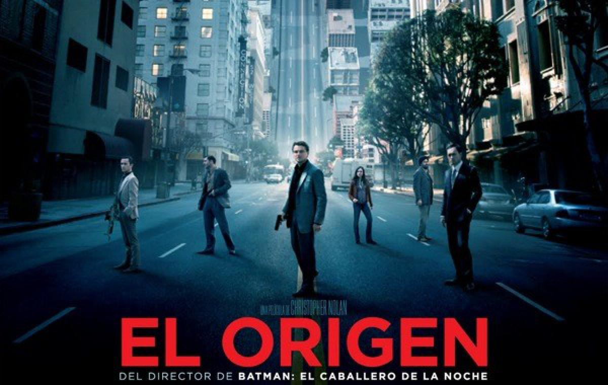

Peliculas


En Avatar 2: el sentido del agua, el tiempo es importante. Diez años han transcurrido desde que Jake
Sully (Sam Worthington) recibiera el prodigio de Eywa en el Árbol de la Vida. Su identidad humana
desapareció o, mejor dicho, evolucionó a una comunión total con Pandora.
Su mirada es la de un Na’vi y esa es la gran revelación que el argumento escrito por James Cameron, Rick
Jaffa y Amanda Silver deja clara. El espíritu aventurero del personaje es un reflejo de su planeta
adoptivo.
También del misterio cálido que envuelve cada elemento que le rodea. Tal y como la primera película
manifestó en el 2009, nada en este entorno poderoso está desvinculado del centro mismo de la vida. Nada
está fuera del asombro que envuelve y sostiene la narración como una travesía hacia un paraje de
desconcertante belleza.
‘Cómo entrenar a tu dragón 3’ es una película que se plantea dos grandes preguntas. La primera es a
nivel narrativo y sirve para encontrar una forma de justificar que los dragones desaparecieran sin dejar
rastro de nuestro planeta, pero la que ahora nos interesa tiene una vertiente más emocional. Me refiero
a la que durante la campaña promocional de la película se ha calificado como el interés romántico de
Desdentao.
Este largometraje presenta a una niña de 12 años que viaja con sus padres debido a una mudanza. En medio
de este viaje, Chihiro quedará atrapada en otro mundo distinto del real, en el que tendrá que conseguir
su libertad y, asimismo, la de sus padres, para poder volver a su propio mundo.
Series